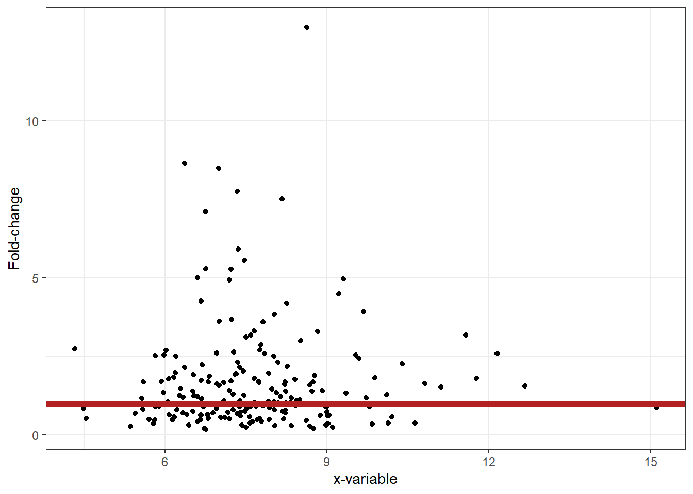
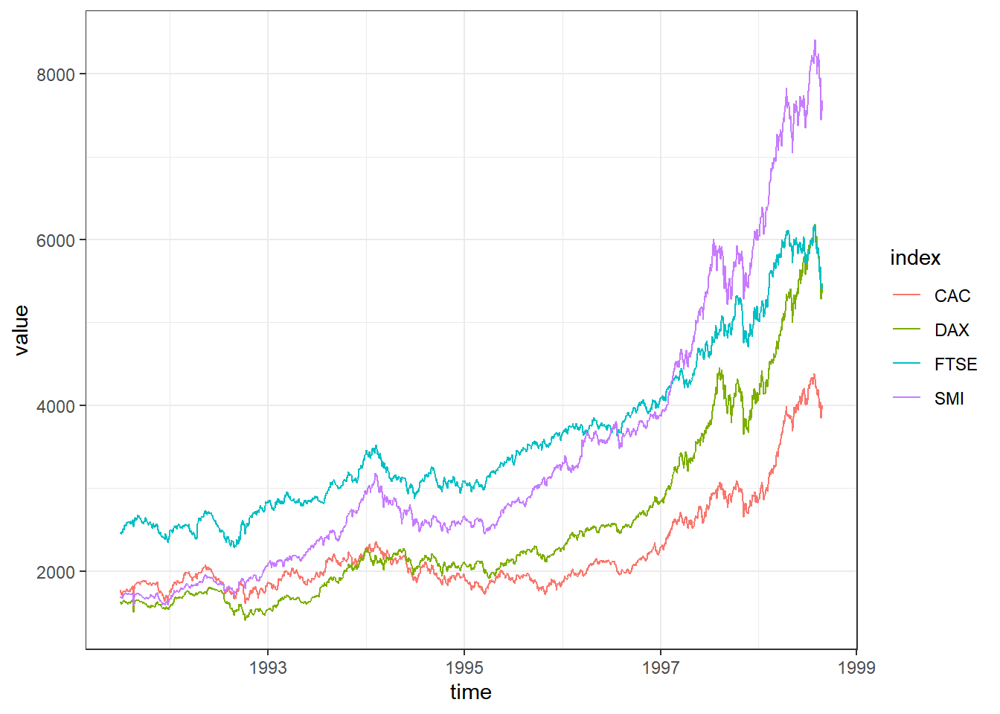
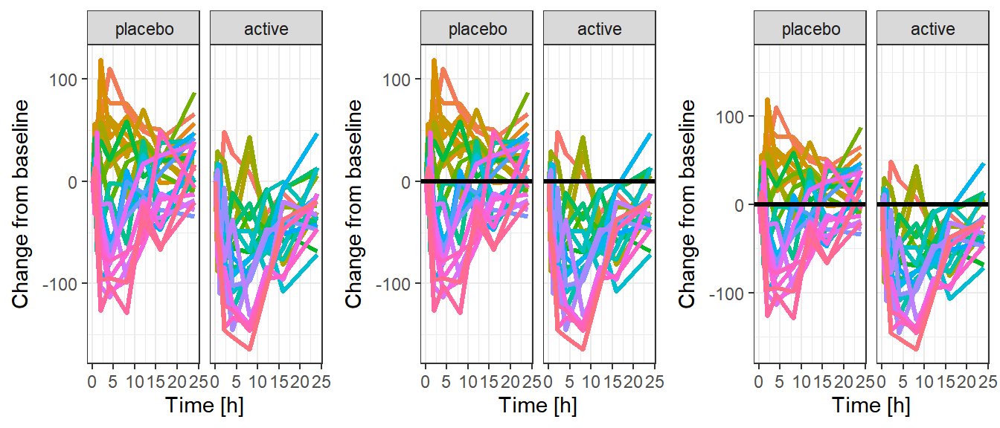

This site and its content are in development. The authors welcome feedback. Please either [insert info about raising an issue/PR/email etc.]
Data visualisations must serve a purpose. By understanding the purpose of a visualisation, we – as author or reader – are in a position to assess whether a visualisation succeeds in its aims or requires improvement.
Arguably the most common purpose of a visualisation is a comparison of groups of data, such as data on patients receiving different treatments. A good choice of axes, axis limits, labels and symbols can facilitate substantially the identification of patterns in the data, whereas poor choices for any of these elements can substantially hamper the extraction of information.
Elements of charts
Various elements of a visualisation can contribute to the efficacy with which information can be distilled. All visualisation software packages will output graphics in a default style, but these will rarely, if ever, be the optimum choices for the data visualisation you are creating. When designing a data visualisation, one needs to consider the range of options available. Some of these options are discussed in what follows.
Layout (panels, facets)
The layout (arrangement of multiple panels, facets, or subplots) is highly relevant for efficient comparison. If data on the y-axis are to be compared, a single y-axis with all panels aligned horizontally facilitates comparison, whereas for efficient comparison of x-axis values, panels should be stacked. Matrix layouts (multiple rows and columns in a single figure) should only be used if the data shown in individual panels are not related or space does not permit a single row or a single column (e.g., if there are too many panels to fit on a single row).
Example: The figure below shows two different layouts of exactly the same data with exactly the same type of visualisation except for the layout. Note how difficult it is to compare the data across panels on the left-hand side, while it is easy with the layout on the right-hand side. The key difference is that the panels on the right share a common y-axis, which is key for comparison of y-values across panels.
Code
# ---# Data set creation.set.seed(93384)time <-c(0, 0.5, 1, 2, 4, 8, 12, 16, 24)n <-32# no of subjectsdata <-expand.grid(ID=1:n, time=time)bw <-data.frame(ID=sort(unique(data$ID)),bw=rlnorm(n, log(75), sdlog=0.25))bw$bw.category <-cut(bw$bw,breaks=quantile(bw$bw, c(0, 0.33, 0.66, 1)), labels=paste(c("low", "medium", "high"), "body weight"), include.lowest=TRUE)data <-merge(data, bw)data <- data[order(data$ID, data$time), ]# Simulate drug concentrations as a function of body weight.data$conc <-100/(data$bw^1.0)*exp(-0.085*data$time)*rlnorm(nrow(data), sdlog=0.25)+# res. error (data$ID-mean(data$ID))/mean(data$ID)/4# r. eff# ---# Visualisation.library(ggplot2)gg <-list()data$ID <-factor(data$ID)gg[["3x1"]] <-ggplot(data, aes(x=time, y=conc, group=ID, color=ID)) +geom_line() gg[["3x1"]] <- gg[["3x1"]] +scale_x_continuous(breaks=seq(0, 24, by=4)) gg[["3x1"]] <- gg[["3x1"]] +theme_bw() +xlab("time [h]") +ylab("drug concentration [ng/mL]")gg[["3x1"]] <- gg[["3x1"]] +facet_grid(bw.category ~ .)gg[["3x1"]] <- gg[["3x1"]] +theme(legend.position="none")gg[["1x3"]] <- gg[["3x1"]] +facet_grid(. ~ bw.category)# Add space to the rhs of the first figure for better separation in the cowplot.gg[["3x1"]] <- gg[["3x1"]] +theme(plot.margin =unit(c(0.5, 4, 0.5, 0.5), "lines"))# print(gg)# ---# Both figures into a single output figure.library(cowplot)plot_grid(gg[[1]], gg[[2]], rel_widths=c(1.5, 2))
Choice of layout determines ease of comparison across panels
Aspect ratio
Our visual perception of data in a display must not depend on the choice of x- and y-axes. In many cases, a square figure avoids visual bias. A square figure should be considered in particular if the two axes share a communality such as a measurement before and after some event, observed data vs model-predicted values or, more generally, the same units (such as kg or metres). Generally, a 1:1 aspect ratio (the physical length of 1 measurement unit in the x- and the y-direction) is a good default. If the figure has identical ranges for the x- and the y-axis, a 1:1 aspect ratio yields a square figure.
Example: The three panels below all show the same data, aiming at enabling judgement about the goodness of a model fit (predicted vs observed values). Note the difference in visual perception between a stretched x-axis, a stretched y-axis, and a 1:1 aspect ratio (i.e., one unit in x and y corresponds to the same number of pixels) and identical axis limits (such that the figure is square). Other applications: any x and y that are to be compared.
Code
# Observed vs predicted (any data with comparable x and y will do).# ---# Data set.# Old Faithful Geyser (Yellowstone) data set with eruption duration# and waiting time to the next eruption (both in minutes).data <-data.frame(x=faithful$eruptions,y=faithful$waiting)# ---# Regression model fit.fit <-lm(y ~ x, data=data)# Addition of predicted values to the data set.data$pred <-predict(fit)# Range of y and y predicted combined.r <-range(unlist(data[c("y", "pred")]))# ---# Plotting.library(ggplot2)gg <-ggplot(data, aes(x=pred, y=y))# Adding the line of identity, y=x (note: plotting it first will add points on top).gg <- gg +geom_abline(intercept=0, slope=1, color="black", linewidth=1)# Adding points, removing grey background.gg <- gg +geom_point() +theme_bw() # Adding linear OLS regression fit of y~x.gg <- gg +geom_smooth(method="loess", color="firebrick", se=FALSE)# Adding axis labels.gg <- gg +xlab("predicted") +ylab("observed")# Transpose (flip coordinates)gg2 <- gg +coord_flip()# Setting the aspect ratio to 1 (1 unit in x and y corresponds# to the same number of pixels).gg3 <- gg +coord_fixed()# Defining identical axis limits for x and y.gg3 <- gg3 +xlim(r) +ylim(r)# Cow (column-wise) plot, combine all figures into one.library(cowplot)plot_grid(gg, gg2, gg3, rel_widths=c(4, 2, 2), nrow=1)
Visual perception is influenced by aspect ratio
Lines
Lines introduce an order, a sequence. If there is no order, data should not be interconnected by lines. If different line types indicate different groups that have an inherent order, it is helpful if the chosen line styles have an order, too (example: line thickness, dash density, or darkness of colour increases with values from the lowest to the highest group).
Points
Point symbols should be chosen such that the visualisation displays the data in a meaningful way. If thousands of data points are to be shown, open circles or smaller filled symbols are better than overlapping filled symbols. If the data are discrete and observations overlay, consider jittering the data gently for a better visualisation.
Colours
Colours should serve a purpose such as helping to identify different groups. Colours for pure decoration are discouraged. Cleveland pointed out that because “they do have a natural visual hierarchy, varying shades of gray show varying quantities better than color”, and “the shades of gray provide an easily comprehended order to the data measures. This is the key” (Cleveland 2001, p. 154).
Axes
Origins and limits
Axis ranges should generally start at 0 unless there is a good reason for choosing other ranges. If the data do not contain negative values, the axis should not stretch into negative values and in particular not have tick marks at negative values.
If relative changes or ratios are displayed, the corresponding axis should be logarithmic (such that, e.g., 1/4 has the same distance to the reference point, 1, as 4) and symmetric around the point of no change. An auxiliary line at the point of no change can facilitate interpretation. Axis tickmarks and auxiliary grey lines will facilitate reading off values, avoiding wrong linear interpolation by the viewer. Axis tick mark labels should indicate the ratio (e..g, “1/4” instead of 0.25).
If the data displayed as x and as y are comparable, axis limits should be identical and the figure square, such that distances are consistent in the x- and in the y-direction.
Example: The figure below illustrates that the deliberate choice of axis limits (here, y-axis limits) can make a big difference to perception, and therefore interpretation, by the reader. The only difference between the two panels is the y-axis range.
Visual impression can be driven by the choice of axis limits
Linear and logarithmic axes
Example: Let’s say that you want to know whether some variable, y, changes (compared to a reference or baseline measurement) depending on another variable, x. For example, does blood pressure change with treatment?
The figure below shows data with, on average, no change compared to a reference (baseline) measurement (red horizontal line) – approximately half the data are below and above the point of no change. However, this is not easily apparent from the top-left panel, which uses a linear axis, and so space is allocated asymmetrically in the vertical direction -- both up and down – away from the reference line. In the top-right panel, which uses a logarithmic axis, the relatively even spread of the data points around the reference line is clear to see.
Code
# Naïve plot of y vs x. If there is no change (on average), # half the data are below the line of no change.# Asymmetric view, and it depends on y/x or x/y.set.seed(33838)x <-data.frame(x=rlnorm(200, 2, 0.2),y=rlnorm(200, 0.2, 0.75))# Add an outlier manually.x <-rbind(x, data.frame(x=quantile(x$x, 0.8), y=max(x$y)*1.5))# ---# Plotting.library(ggplot2)# Scatterplot of y vs x.gg <-ggplot(x, aes(x=x, y=y)) +geom_point() +theme_bw()gg <- gg +geom_hline(yintercept=1, color="firebrick", linewidth=2)gg <- gg +xlab("x-variable") +ylab("Fold-change")gg# Logarithmic axes, symmetric range (!):xbr <-c(1/10, 1/5, 1/2, 1, 2, 5, 10)gg <- gg +scale_y_continuous(breaks=xbr, trans="log10",limits=max(abs(x$y))^c(-1, 1))print(gg)# Second axis:gg <- gg +scale_y_continuous(breaks=xbr,labels=paste(100*xbr, "%", sep=""),trans="log10",limits=max(abs(x$y))^c(-1, 1),sec.axis=sec_axis(trans=~.*1, breaks=xbr,labels=ifelse(xbr <1, paste("1/", 1/xbr, sep=""), xbr)))# ---# Univariate distribution (histogram).gg <-ggplot(x, aes(x=y)) +theme_bw() +xlab("Fold-change")gg <- gg +geom_histogram(color="firebrick", fill="gray")print(gg)# Symmetric range, log scale.gg <- gg +scale_x_continuous(breaks=xbr,labels=ifelse(xbr <1, paste("1/", 1/xbr), xbr),trans="log10",limits=max(abs(x$x))^c(-1, 1))print(gg)

[caption to be added]
Symbols
Symbols should be intuitive (for example, “+” for a positive outcome, “-” for a negative outcome, “O” for a neutral outcome). In an ideal case, symbols require only a single look at the legend to subsequently focus on the visualisation.
Symbols such as triangles, circles, and squares do not have an intuitive connotation. However, if there is an order in the data, it might be reflected in the order of the symbols, e.g., the number of vertices (circle, dash, triangle, square, pentagon, etc.).
Legends
Legends should not attract too much attention and certainly not cover up data. They should be placed in the margins of the figure or can be captured in a small text below the figure.
If legend entries refer to single objects (e.g., one line per group), placing the legend next to the corresponding object makes it easier for the reader to map legend entries to display objects.
Example: The figure below shows that ease of reading can be improved by adding the legend directly into the figure, next to the corresponding data. Note that labels must not overlay and label positions might require adaptation depending on the data.
Code
# ---# EU stock markets, year and indices DAX, SMI, CAC, and FTSE.# Store graphics into a list.gg.list <-list()# Prepare the data set (reformat EuStockMarkets that comes with R).x <- EuStockMarketsdf <-data.frame(time=as.vector(time(x)),index=rep(colnames(x), rep(nrow(x), ncol(x))),value=as.vector(x))df$index2 <- df$index # For use with labels later.library(ggplot2)# Standard layout and legend.gg <-ggplot(df, aes(x=time, y=value, group=index, color=index, label=index2))gg <- gg +geom_line() +theme_bw()# Nicer axis tick mark settings.ax <-pretty(df$time, n=10)gg <- gg +scale_x_continuous(limits=range(ax), breaks=ax)gg <- gg +xlab("year") +ylab("Stock index")gg.list[[1]] <- gg# Use the last element of each time series for x,y of the label.# Use that the last element is the first element of the reversed order,# and extract the first element per index by using !duplicated.y <- df[rev(order(df$time)), ] # descending in time.y <- y[!duplicated(y$index), ] # first entry per indexy$index2 <- y$index # Create a copy that contains formatted strings.levels(y$index2)[levels(y$index2)=="FTSE"] <-"\n\nFTSE"# Add a newline to separate FTSE from DAX.# Note that the factor level is modified, not the data.# Drop the legend, move labels into figure.gg <- gg +geom_text(data=y, hjust="left", nudge_x=0.1) # aes as before, nudge adds space on the lhs.gg <- gg +theme(legend.position="none")gg.list[[2]] <- gg# ---# Both figures into a single output figure.library(cowplot)plot_grid(gg.list[[1]], gg.list[[2]], rel_widths=c(2.25, 2))

Direct labelling of figure elements can improve ease of reading
Orientation
Horizontal boxplots allow for a more accurate visual comparison than vertical boxplots since it is easier for the human eye to follow an imaginary vertical line than an imaginary horizontal line.
If there is an order in the data that is to be visualised, e.g., as a barplot, showing the data as horizontal bars and sorting so as to place larger values on top is more intuitive than showing vertical bars with a left-to-right orientation (Few, 2004, p. 182).
Auxiliary elements
Generally speaking, when designing a data visualisation, we need to be wary of what Tufte calls “chart junk” – any element of a chart that does not add to or enhance the information on display. Data are, of course, the star of the show, so should receive the most space. Meanwhile, all additional elements (lines, colours, symbols, etc.) should be assessed for their contribution to the interpretation of the data. If there is no contribution, they can be removed. A typical example of a redundant element in a data visualisation is a figure that has 5 panels (sub-figures or facets), each with x- and y-axis. To allow for efficient comparison of the data shown in the different panels, a single y-axis suffices if the panels are all aligned on a single row. This creates more space for the data and synchronises y-axis limits and data positions as a side benefit.
Some helpful additional elements can include lines at relevant points. Examples include a vertical line at x=0 (e.g., for time 0), a horizontal line at y=0 (e.g., to indicate the point of no change, or a diagonal (at y=x, e.g., to indicate no difference between x and y). Consider whether the auxiliary element is better plotted under or over the data (which generally depends on the sequence of adding graphics elements).
A local scatterplot smoother (loess, lowess, polynomial) can be particularly helpful to identify relationships with limited model assumptions. The confidence band (pointwise confidence intervals) should only be shown if relevant.
Example: The figure below displays changes from a starting point (time 0) over time. A plain figure (left panel) requires the reader to read the y-axis labels to identify the point of no change (y=0). The addition of a line (middle panel) indicating the point of no change makes reading easier, and choosing an axis range symmetric around the point of no change (right panel) allocates increases (changes upward) to the upper half of the visualisation and decreases (changes downward) to the lower half, making reading and interpretation more intuitive.
Code
# Function for data set generation.make.data <-function(x=c(0, 0.5, 1, 2, 4, 8, 12, 16, 24),y=exp(-0.2*x) -exp(-0.21*x),sd=0.25, # std dev of yseed=4384590,n=50){# Setting the random number seed for reproducibility.set.seed(seed)# Creation of x- and y-variables. x2 <-rep(x, n) y2 <-NULLfor(i in1:n) y2 <-c(y2, y*(2*(n/4-i)) +rlnorm(length(y), sd=sd))# Creation of an identifier for each profile. ID <-factor(rep(1:n, rep(length(y), n)))# Composition of the data set. df <-data.frame(PD=100*y2, time=x, ID=ID)# Addition of a baseline variable. BL <- df[df$time==0, c("ID", "PD")]names(BL) <-c("ID", "BL") df <-merge(df, BL)# Addition of change from baseline. df$Change <- df$PD - df$BL# Definition of treatment. df$trt <-ifelse(df$BL >mean(df$BL), "active", " placebo")return(df)}# Generate the data.x <-make.data()# ---# Figures.library(ggplot2)gg <-ggplot(x, aes(x=time, y=Change, group=ID, color=ID))gg <- gg +theme_bw()gg <- gg +xlab("Time [h]") +ylab("Change from baseline")gg <- gg +geom_line(linewidth=1.1) +theme(legend.position="none")gg <- gg +facet_grid(.~trt)# Addition of an auxiliary line at y=0.gg2 <- gg +geom_hline(yintercept=0, linewidth=1.2)# Symmetric y-axis limits.gg3 <- gg2 +ylim(c(-1, 1)*max(abs(x$Change)))# Arranging all plots into one figure.library(cowplot)plot_grid(gg, gg2, gg3, nrow=1)

[caption to come]
Higher dimensions
Three-dimensional displays of data may look striking, in some respects, but accurate reading and interpretation is not straightforward with such presentations.
Example: The left panel of the figure below displays a single number, 10, as a 3D bar chart. The correct identification of the value is indicated by the red “X”: the height of the bar must be projected against the rear wall (the axis) from the viewing position. The figure on the right positions bars on a tilted surface, resulting in perceived height differences when there are none: the same four numbers, 10, 20, 30, and 40, are shown in each row and column.
Reading off data values from 3D charts is difficult
Elements of tables
Tables can be an efficient means of visualisation, just like graphics – and they also can be misleading or cumbersome to read if not properly presented. Tables should in particular be considered for a small number of data points or if precise numbers are to be shown. For example if numbers need to be overlaid on graphics to aid readability and interpretation (for example, appending digits to the end of the bars in a barchart), one might consider omitting the graphic entirely and displaying the numbers as a table.
Tables have design elements just like graphics. Some of them are discussed in the following.
Layout
One design element for tables is the layout, i.e., rows and columns. The layout should be chosen actively with the reader in mind. It is generally easier to compare numbers vertically than horizontally.
Digits
The number of digits should be consistent within a table row or column (i.e., the same variable) but can differ across variables (e.g., if the table contains small and large numbers). Unnecessary precision should be avoided, a lower number of digits might facilitate reading and comparison.
Alignment
Numbers should be right-aligned to allow for easy identification of large and small numbers. In this way, large numbers literally stick out.
Multiple numbers in table cells
If table cells contain more than a single value (e.g., means and confidence intervals), it should be considered if there is a better way to display the data for easy reading. Options include splitting the numbers into multiple table cells, rows, or columns, or reducing the font size for the less relevant numbers (e.g., means might be more important than confidence intervals).
Orientation
Landscape orientation is discouraged unless it cannot be avoided. Rotating a document in order to read a part of it is cumbersome for the reader, whether in print or on screen. Splitting a table into two might be a remedy to avoid landscape orientation – but one will need to consider whether splitting the table makes important comparisons more difficult to achieve.
Fonts and colours
Different fonts and colours can be used if these serve a purpose, such as highlighting a particular value. Use of different fonts or colours for decorative purposes is discouraged.
Source Code
---title: Principles and elements of visualisationsformat: html: code-fold: true code-tools: trueexecute: warning: false---::: {.callout-warning appearance="simple"}This site and its content are in development. The authors welcome feedback. Please either \[insert info about raising an issue/PR/email etc.\]:::Data visualisations must serve a purpose. By understanding the purpose of a visualisation, we -- as author or reader -- are in a position to assess whether a visualisation succeeds in its aims or requires improvement.Arguably the most common purpose of a visualisation is a comparison of groups of data, such as data on patients receiving different treatments. A good choice of axes, axis limits, labels and symbols can facilitate substantially the identification of patterns in the data, whereas poor choices for any of these elements can substantially hamper the extraction of information.## Elements of chartsVarious elements of a visualisation can contribute to the efficacy with which information can be distilled. All visualisation software packages will output graphics in a default style, but these will rarely, if ever, be the optimum choices for the data visualisation you are creating. When designing a data visualisation, one needs to consider the range of options available. Some of these options are discussed in what follows.### Layout (panels, facets)The layout (arrangement of multiple panels, facets, or subplots) is highly relevant for efficient comparison. If data on the y-axis are to be compared, a single y-axis with all panels aligned horizontally facilitates comparison, whereas for efficient comparison of x-axis values, panels should be stacked. Matrix layouts (multiple rows and columns in a single figure) should only be used if the data shown in individual panels are not related or space does not permit a single row or a single column (e.g., if there are too many panels to fit on a single row).**Example:** The figure below shows two different layouts of exactly the same data with exactly the same type of visualisation except for the layout. Note how difficult it is to compare the data across panels on the left-hand side, while it is easy with the layout on the right-hand side. The key difference is that the panels on the right share a common y-axis, which is key for comparison of y-values across panels.```{r}# ---# Data set creation.set.seed(93384)time <-c(0, 0.5, 1, 2, 4, 8, 12, 16, 24)n <-32# no of subjectsdata <-expand.grid(ID=1:n, time=time)bw <-data.frame(ID=sort(unique(data$ID)),bw=rlnorm(n, log(75), sdlog=0.25))bw$bw.category <-cut(bw$bw,breaks=quantile(bw$bw, c(0, 0.33, 0.66, 1)), labels=paste(c("low", "medium", "high"), "body weight"), include.lowest=TRUE)data <-merge(data, bw)data <- data[order(data$ID, data$time), ]# Simulate drug concentrations as a function of body weight.data$conc <-100/(data$bw^1.0)*exp(-0.085*data$time)*rlnorm(nrow(data), sdlog=0.25)+# res. error (data$ID-mean(data$ID))/mean(data$ID)/4# r. eff# ---# Visualisation.library(ggplot2)gg <-list()data$ID <-factor(data$ID)gg[["3x1"]] <-ggplot(data, aes(x=time, y=conc, group=ID, color=ID)) +geom_line() gg[["3x1"]] <- gg[["3x1"]] +scale_x_continuous(breaks=seq(0, 24, by=4)) gg[["3x1"]] <- gg[["3x1"]] +theme_bw() +xlab("time [h]") +ylab("drug concentration [ng/mL]")gg[["3x1"]] <- gg[["3x1"]] +facet_grid(bw.category ~ .)gg[["3x1"]] <- gg[["3x1"]] +theme(legend.position="none")gg[["1x3"]] <- gg[["3x1"]] +facet_grid(. ~ bw.category)# Add space to the rhs of the first figure for better separation in the cowplot.gg[["3x1"]] <- gg[["3x1"]] +theme(plot.margin =unit(c(0.5, 4, 0.5, 0.5), "lines"))# print(gg)# ---# Both figures into a single output figure.library(cowplot)plot_grid(gg[[1]], gg[[2]], rel_widths=c(1.5, 2))```::: figure-captionChoice of layout determines ease of comparison across panels:::### Aspect ratioOur visual perception of data in a display must not depend on the choice of x- and y-axes. In many cases, a square figure avoids visual bias. A square figure should be considered in particular if the two axes share a communality such as a measurement before and after some event, observed data vs model-predicted values or, more generally, the same units (such as kg or metres). Generally, a 1:1 aspect ratio (the physical length of 1 measurement unit in the x- and the y-direction) is a good default. If the figure has identical ranges for the x- and the y-axis, a 1:1 aspect ratio yields a square figure.**Example:** The three panels below all show the same data, aiming at enabling judgement about the goodness of a model fit (predicted vs observed values). Note the difference in visual perception between a stretched x-axis, a stretched y-axis, and a 1:1 aspect ratio (i.e., one unit in x and y corresponds to the same number of pixels) and identical axis limits (such that the figure is square). Other applications: any x and y that are to be compared.```{r}#| message: false#| warning: false# Observed vs predicted (any data with comparable x and y will do).# ---# Data set.# Old Faithful Geyser (Yellowstone) data set with eruption duration# and waiting time to the next eruption (both in minutes).data <-data.frame(x=faithful$eruptions,y=faithful$waiting)# ---# Regression model fit.fit <-lm(y ~ x, data=data)# Addition of predicted values to the data set.data$pred <-predict(fit)# Range of y and y predicted combined.r <-range(unlist(data[c("y", "pred")]))# ---# Plotting.library(ggplot2)gg <-ggplot(data, aes(x=pred, y=y))# Adding the line of identity, y=x (note: plotting it first will add points on top).gg <- gg +geom_abline(intercept=0, slope=1, color="black", linewidth=1)# Adding points, removing grey background.gg <- gg +geom_point() +theme_bw() # Adding linear OLS regression fit of y~x.gg <- gg +geom_smooth(method="loess", color="firebrick", se=FALSE)# Adding axis labels.gg <- gg +xlab("predicted") +ylab("observed")# Transpose (flip coordinates)gg2 <- gg +coord_flip()# Setting the aspect ratio to 1 (1 unit in x and y corresponds# to the same number of pixels).gg3 <- gg +coord_fixed()# Defining identical axis limits for x and y.gg3 <- gg3 +xlim(r) +ylim(r)# Cow (column-wise) plot, combine all figures into one.library(cowplot)plot_grid(gg, gg2, gg3, rel_widths=c(4, 2, 2), nrow=1)```::: figure-captionVisual perception is influenced by aspect ratio:::### LinesLines introduce an order, a sequence. If there is no order, data should not be interconnected by lines. If different line types indicate different groups that have an inherent order, it is helpful if the chosen line styles have an order, too (example: line thickness, dash density, or darkness of colour increases with values from the lowest to the highest group).### PointsPoint symbols should be chosen such that the visualisation displays the data in a meaningful way. If thousands of data points are to be shown, open circles or smaller filled symbols are better than overlapping filled symbols. If the data are discrete and observations overlay, consider jittering the data gently for a better visualisation.### ColoursColours should serve a purpose such as helping to identify different groups. Colours for pure decoration are discouraged. Cleveland pointed out that because "they do have a natural visual hierarchy, varying shades of gray show varying quantities better than color", and "the shades of gray provide an easily comprehended order to the data measures. This is the key" (Cleveland 2001, p. 154).### Axes#### Origins and limitsAxis ranges should generally start at 0 unless there is a good reason for choosing other ranges. If the data do not contain negative values, the axis should not stretch into negative values and in particular not have tick marks at negative values.If relative changes or ratios are displayed, the corresponding axis should be logarithmic (such that, e.g., 1/4 has the same distance to the reference point, 1, as 4) and symmetric around the point of no change. An auxiliary line at the point of no change can facilitate interpretation. Axis tickmarks and auxiliary grey lines will facilitate reading off values, avoiding wrong linear interpolation by the viewer. Axis tick mark labels should indicate the ratio (e..g, "1/4" instead of 0.25).If the data displayed as x and as y are comparable, axis limits should be identical and the figure square, such that distances are consistent in the x- and in the y-direction.**Example:** The figure below illustrates that the deliberate choice of axis limits (here, y-axis limits) can make a big difference to perception, and therefore interpretation, by the reader. The only difference between the two panels is the y-axis range.```{r}#| layout-ncol: 2library(ggplot2)plot_data <-data.frame(type =factor(c("Our product", "Competitor"),levels =c("Our product", "Competitor")),value =c(220, 210))# Original plotggplot(plot_data) +geom_col(mapping=aes(x=type, y=value),fill="lightblue",colour="black" ) +scale_y_continuous(breaks=seq(0, 220, by=20), expand=c(0, 0)) +labs(x="", y="") +theme_minimal()# Offset the y axisoffset <-208ggplot(plot_data) +geom_col(mapping =aes(x=type, y=value-offset),fill="lightblue",colour="black" ) +scale_y_continuous(breaks=seq(0, 14, by=2),labels=seq(0+offset, 14+ offset, by=2),expand=c(0, 0)) +labs(x="", y="") +theme_minimal()```::: figure-captionVisual impression can be driven by the choice of axis limits:::#### Linear and logarithmic axes**Example:** Let's say that you want to know whether some variable, y, changes (compared to a reference or baseline measurement) depending on another variable, x. For example, does blood pressure change with treatment?The figure below shows data with, on average, no change compared to a reference (baseline) measurement (red horizontal line) -- approximately half the data are below and above the point of no change. However, this is not easily apparent from the top-left panel, which uses a linear axis, and so space is allocated asymmetrically in the vertical direction \-- both up and down -- away from the reference line. In the top-right panel, which uses a logarithmic axis, the relatively even spread of the data points around the reference line is clear to see.```{r}#| warning: false#| message: false#| layout-ncol: 2# Naïve plot of y vs x. If there is no change (on average), # half the data are below the line of no change.# Asymmetric view, and it depends on y/x or x/y.set.seed(33838)x <-data.frame(x=rlnorm(200, 2, 0.2),y=rlnorm(200, 0.2, 0.75))# Add an outlier manually.x <-rbind(x, data.frame(x=quantile(x$x, 0.8), y=max(x$y)*1.5))# ---# Plotting.library(ggplot2)# Scatterplot of y vs x.gg <-ggplot(x, aes(x=x, y=y)) +geom_point() +theme_bw()gg <- gg +geom_hline(yintercept=1, color="firebrick", linewidth=2)gg <- gg +xlab("x-variable") +ylab("Fold-change")gg# Logarithmic axes, symmetric range (!):xbr <-c(1/10, 1/5, 1/2, 1, 2, 5, 10)gg <- gg +scale_y_continuous(breaks=xbr, trans="log10",limits=max(abs(x$y))^c(-1, 1))print(gg)# Second axis:gg <- gg +scale_y_continuous(breaks=xbr,labels=paste(100*xbr, "%", sep=""),trans="log10",limits=max(abs(x$y))^c(-1, 1),sec.axis=sec_axis(trans=~.*1, breaks=xbr,labels=ifelse(xbr <1, paste("1/", 1/xbr, sep=""), xbr)))# ---# Univariate distribution (histogram).gg <-ggplot(x, aes(x=y)) +theme_bw() +xlab("Fold-change")gg <- gg +geom_histogram(color="firebrick", fill="gray")print(gg)# Symmetric range, log scale.gg <- gg +scale_x_continuous(breaks=xbr,labels=ifelse(xbr <1, paste("1/", 1/xbr), xbr),trans="log10",limits=max(abs(x$x))^c(-1, 1))print(gg)```::: figure-caption\[caption to be added\]:::### SymbolsSymbols should be intuitive (for example, "+" for a positive outcome, "-" for a negative outcome, "O" for a neutral outcome). In an ideal case, symbols require only a single look at the legend to subsequently focus on the visualisation. Symbols such as triangles, circles, and squares do not have an intuitive connotation. However, if there is an order in the data, it might be reflected in the order of the symbols, e.g., the number of vertices (circle, dash, triangle, square, pentagon, etc.).### LegendsLegends should not attract too much attention and certainly not cover up data. They should be placed in the margins of the figure or can be captured in a small text below the figure. If legend entries refer to single objects (e.g., one line per group), placing the legend next to the corresponding object makes it easier for the reader to map legend entries to display objects.**Example:** The figure below shows that ease of reading can be improved by adding the legend directly into the figure, next to the corresponding data. Note that labels must not overlay and label positions might require adaptation depending on the data.```{r}# ---# EU stock markets, year and indices DAX, SMI, CAC, and FTSE.# Store graphics into a list.gg.list <-list()# Prepare the data set (reformat EuStockMarkets that comes with R).x <- EuStockMarketsdf <-data.frame(time=as.vector(time(x)),index=rep(colnames(x), rep(nrow(x), ncol(x))),value=as.vector(x))df$index2 <- df$index # For use with labels later.library(ggplot2)# Standard layout and legend.gg <-ggplot(df, aes(x=time, y=value, group=index, color=index, label=index2))gg <- gg +geom_line() +theme_bw()# Nicer axis tick mark settings.ax <-pretty(df$time, n=10)gg <- gg +scale_x_continuous(limits=range(ax), breaks=ax)gg <- gg +xlab("year") +ylab("Stock index")gg.list[[1]] <- gg# Use the last element of each time series for x,y of the label.# Use that the last element is the first element of the reversed order,# and extract the first element per index by using !duplicated.y <- df[rev(order(df$time)), ] # descending in time.y <- y[!duplicated(y$index), ] # first entry per indexy$index2 <- y$index # Create a copy that contains formatted strings.levels(y$index2)[levels(y$index2)=="FTSE"] <-"\n\nFTSE"# Add a newline to separate FTSE from DAX.# Note that the factor level is modified, not the data.# Drop the legend, move labels into figure.gg <- gg +geom_text(data=y, hjust="left", nudge_x=0.1) # aes as before, nudge adds space on the lhs.gg <- gg +theme(legend.position="none")gg.list[[2]] <- gg# ---# Both figures into a single output figure.library(cowplot)plot_grid(gg.list[[1]], gg.list[[2]], rel_widths=c(2.25, 2))```::: figure-captionDirect labelling of figure elements can improve ease of reading:::### OrientationHorizontal boxplots allow for a more accurate visual comparison than vertical boxplots since it is easier for the human eye to follow an imaginary vertical line than an imaginary horizontal line.If there is an order in the data that is to be visualised, e.g., as a barplot, showing the data as horizontal bars and sorting so as to place larger values on top is more intuitive than showing vertical bars with a left-to-right orientation (Few, 2004, p. 182).### Auxiliary elementsGenerally speaking, when designing a data visualisation, we need to be wary of what Tufte calls "chart junk" -- any element of a chart that does not add to or enhance the information on display. Data are, of course, the star of the show, so should receive the most space. Meanwhile, all additional elements (lines, colours, symbols, etc.) should be assessed for their contribution to the interpretation of the data. If there is no contribution, they can be removed. A typical example of a redundant element in a data visualisation is a figure that has 5 panels (sub-figures or facets), each with x- and y-axis. To allow for efficient comparison of the data shown in the different panels, a single y-axis suffices if the panels are all aligned on a single row. This creates more space for the data and synchronises y-axis limits and data positions as a side benefit. Some helpful additional elements can include lines at relevant points. Examples include a vertical line at x=0 (e.g., for time 0), a horizontal line at y=0 (e.g., to indicate the point of no change, or a diagonal (at y=x, e.g., to indicate no difference between x and y). Consider whether the auxiliary element is better plotted under or over the data (which generally depends on the sequence of adding graphics elements).A local scatterplot smoother (loess, lowess, polynomial) can be particularly helpful to identify relationships with limited model assumptions. The confidence band (pointwise confidence intervals) should only be shown if relevant.**Example:** The figure below displays changes from a starting point (time 0) over time. A plain figure (left panel) requires the reader to read the y-axis labels to identify the point of no change (y=0). The addition of a line (middle panel) indicating the point of no change makes reading easier, and choosing an axis range symmetric around the point of no change (right panel) allocates increases (changes upward) to the upper half of the visualisation and decreases (changes downward) to the lower half, making reading and interpretation more intuitive.```{r}#| fig-height: 3# Function for data set generation.make.data <-function(x=c(0, 0.5, 1, 2, 4, 8, 12, 16, 24),y=exp(-0.2*x) -exp(-0.21*x),sd=0.25, # std dev of yseed=4384590,n=50){# Setting the random number seed for reproducibility.set.seed(seed)# Creation of x- and y-variables. x2 <-rep(x, n) y2 <-NULLfor(i in1:n) y2 <-c(y2, y*(2*(n/4-i)) +rlnorm(length(y), sd=sd))# Creation of an identifier for each profile. ID <-factor(rep(1:n, rep(length(y), n)))# Composition of the data set. df <-data.frame(PD=100*y2, time=x, ID=ID)# Addition of a baseline variable. BL <- df[df$time==0, c("ID", "PD")]names(BL) <-c("ID", "BL") df <-merge(df, BL)# Addition of change from baseline. df$Change <- df$PD - df$BL# Definition of treatment. df$trt <-ifelse(df$BL >mean(df$BL), "active", " placebo")return(df)}# Generate the data.x <-make.data()# ---# Figures.library(ggplot2)gg <-ggplot(x, aes(x=time, y=Change, group=ID, color=ID))gg <- gg +theme_bw()gg <- gg +xlab("Time [h]") +ylab("Change from baseline")gg <- gg +geom_line(linewidth=1.1) +theme(legend.position="none")gg <- gg +facet_grid(.~trt)# Addition of an auxiliary line at y=0.gg2 <- gg +geom_hline(yintercept=0, linewidth=1.2)# Symmetric y-axis limits.gg3 <- gg2 +ylim(c(-1, 1)*max(abs(x$Change)))# Arranging all plots into one figure.library(cowplot)plot_grid(gg, gg2, gg3, nrow=1)```::: figure-caption\[caption to come\]:::### Higher dimensionsThree-dimensional displays of data may look striking, in some respects, but accurate reading and interpretation is not straightforward with such presentations.**Example:** The left panel of the figure below displays a single number, 10, as a 3D bar chart. The correct identification of the value is indicated by the red "X": the height of the bar must be projected against the rear wall (the axis) from the viewing position. The figure on the right positions bars on a tilted surface, resulting in perceived height differences when there are none: the same four numbers, 10, 20, 30, and 40, are shown in each row and column.::: figure-captionReading off data values from 3D charts is difficult:::## Elements of tablesTables can be an efficient means of visualisation, just like graphics -- and they also can be misleading or cumbersome to read if not properly presented. Tables should in particular be considered for a small number of data points or if precise numbers are to be shown. For example if numbers need to be overlaid on graphics to aid readability and interpretation (for example, appending digits to the end of the bars in a barchart), one might consider omitting the graphic entirely and displaying the numbers as a table.Tables have design elements just like graphics. Some of them are discussed in the following.### LayoutOne design element for tables is the layout, i.e., rows and columns. The layout should be chosen actively with the reader in mind. It is generally easier to compare numbers vertically than horizontally.### DigitsThe number of digits should be consistent within a table row or column (i.e., the same variable) but can differ across variables (e.g., if the table contains small and large numbers). Unnecessary precision should be avoided, a lower number of digits might facilitate reading and comparison.### AlignmentNumbers should be right-aligned to allow for easy identification of large and small numbers. In this way, large numbers literally stick out.### Multiple numbers in table cellsIf table cells contain more than a single value (e.g., means and confidence intervals), it should be considered if there is a better way to display the data for easy reading. Options include splitting the numbers into multiple table cells, rows, or columns, or reducing the font size for the less relevant numbers (e.g., means might be more important than confidence intervals).### OrientationLandscape orientation is discouraged unless it cannot be avoided. Rotating a document in order to read a part of it is cumbersome for the reader, whether in print or on screen. Splitting a table into two might be a remedy to avoid landscape orientation -- but one will need to consider whether splitting the table makes important comparisons more difficult to achieve.### Fonts and coloursDifferent fonts and colours can be used if these serve a purpose, such as highlighting a particular value. Use of different fonts or colours for decorative purposes is discouraged.